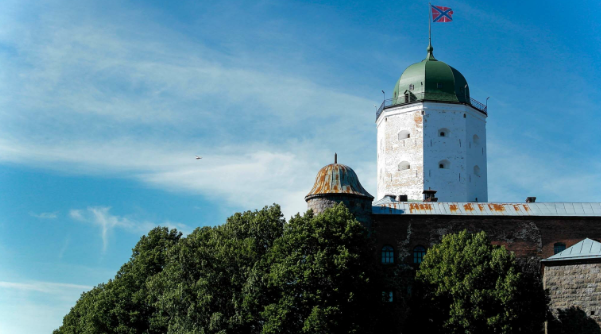
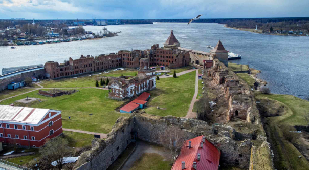
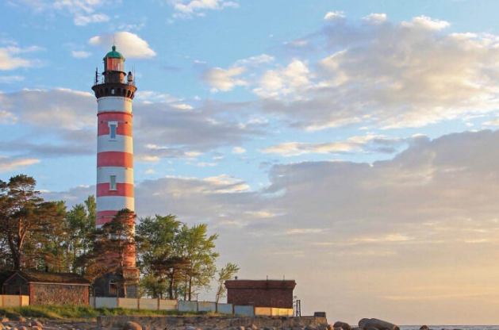

Места

Выборгский замок — единственный настоящий средневековый замок в России. Уникален тем, что это единственный в России полностью сохранившийся образец европейской средневековой архитектуры. Был построен в 1293 году во время третьего шведского крестового похода.

Древнерусская крепость была основана в 1323 году. Она была важнейшим форпостом, и вся ее история неразрывно связана с борьбой России за выход на Балтику. В XVIII веке утратила свое оборонительное значения и стала тюрьмой. Здесь содержались первая жена Петра I Евдокия Лопухина, политзаключенные, декабристы, старший брат Ленина.

На побережье полуострова Каравалдай близ Санкт-Петербурга стоит Шепелёвский маяк – уникальная достопримечательность и один из стражей Финского залива. Когда округу окатывает темнота, маяк освещает окрестности, делая по две вспышки в каждые четверть часа, загораясь либо красным, либо белым светом.
Увлечение машинами
Когда-то в детстве я увидела аниме-сериал "Инициал D" и влюбилась в японские машины (не только спортивные).

Со временем я полюбила и "стареньких немцев".

Это лишь малая часть моих увлечений. Кроме этого, я очень увлечена ретро вещами и обожаю слушать музыку на виниловом проигрывателе, хочу освоить пленочную фотографию, а так же люблю диафильмы (но добавлять изображения этих увлечений мне уже лень).